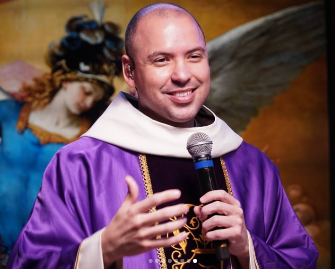
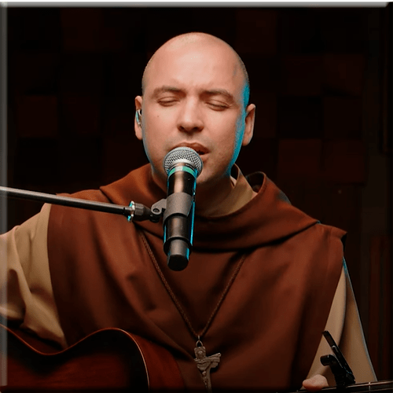
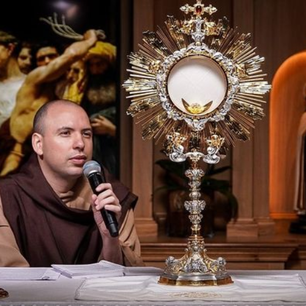

Frei Gilson

Gilson da Silva Pupo Azevedo, mais conhecido como Frei Gilson,
nasceu em São Paulo, em 17 de dezembro de 1986. Durante a
Quaresma, Frei Gilson passou a realizar transmissões nas
primeiras horas da manhã, com destaque para o Santo Rosário
às 4h da manhã, seguido de momentos de oração, pregação e,
em determinadas ocasiões, celebração da Missa.
Além de sacerdote, utiliza a música como forma de evangelização
e acumula grandes sucessos nas principais plataformas da internet.
Músicas

Entre as músicas mais conhecidas de Frei Gilson estão:
Eu Seguirei, Eu Te Levantarei,
Acalma Minha Tempestade,
Deixa Deus Sonhar em Ti,
Colo de Mãe, Tu És o Centro,
Pescador de Homens, Rainha da Paz,
Dias Difíceis e Sem Medo Eu Vou.
As plataformas de música mostram o enorme alcance dessas canções.
Em julho de 2026, por exemplo, músicas como
Eu Seguirei, Acalma Minha Tempestade,
Eu Te Levantarei e
Deixa Deus Sonhar em Ti estavam entre as músicas
de Frei Gilson com dezenas de milhões de reproduções no Spotify.
Acesse as principais músicas
Quaresma do Frei Gilson

Esse é provavelmente um dos aspectos mais impressionantes
de sua popularidade recente.
Durante a Quaresma, Frei Gilson passou a realizar transmissões
nas primeiras horas da manhã, com destaque para o Santo Rosário
às 4h da manhã, seguido de momentos de oração, pregação e,
em determinadas ocasiões, celebração da Missa.
A ideia das orações na madrugada surgiu inicialmente como uma
forma de sacrifício pessoal durante a Quaresma e posteriormente
se transformou em transmissões ao vivo que alcançaram um
público gigantesco.
Em 2025, a repercussão foi extraordinária: as transmissões
chegaram a reunir mais de 1 milhão de pessoas simultaneamente.
Em uma das transmissões de março daquele ano, foram registrados
mais de 1,3 milhão de espectadores.
Isso chama atenção porque não se trata simplesmente de pessoas
assistindo a um show ou a um vídeo musical. Milhões de pessoas
estavam acordando de madrugada para rezar juntas pela internet.
Acesse as lives de Quaresma 2026